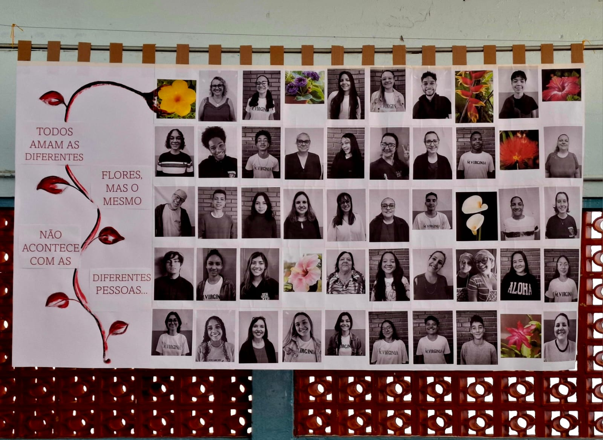

Resultados da Prova Paulista foram divulgados:
03/10/2024
Confira seu desempenho na Prova Paulista do 3° bimestre atráves do aplicativo CMSP
Mural: Bullying e Diversidade:
13/09/2024 Na manhã do dia 13 de setembro, os alunos do ensino médio se reuniram para a elaboração de um painel onde retrata a aceitação da diversidade e uma campanha contra o bullying.
Ler mais...Mural: Valorização a Vida:
20/09/2024
Na manhã do dia 20 de setembro, os alunos do ensino médio se reuniram para a elaboração de um painel onde retrata a valorização a vida, relativa a campanha setembro amarelo.
Ler mais...Alunos comemoram o dia da Independência. Projeto redação crítica. Confira a seguir:
06/09/2024
No dia 06 de setembro foi realizado, em conjunto com os alunos e professores, uma cerimônia em comemoração e homenagem à Independência do Brasil. Houve a leitura da redação do aluno João do 6°A, vencedor do concurso de redação. Confira um trecho do trabalho:
Ler mais...Grupo teatral da escola encena lenda indigena. Projeto de Cultura Popular:
28/08/2024
O grupo de teatro da escola Maria Virgínia apresentou na ultima semana de agosto uma representação das tradições indigenas atráves de uma contação de histórias do folclore brasileiro.
Ler mais...Diretoria de Ensino de Ribeirão Preto promoverá concurso de música nas escolas:
10/09/2024
O concurso de música proposto pela diretoria de ensino teve como principal intuito a maior participação e interação dos alunos com a linguagem da música, tendo direito a jurados representados por alunos do 3° ano do ensino médio e professores.
"Eu vi como uma oportunidade de aprender, e também perder a timidez com o público" - João Pedro Covas Ribeiro, aluno do 2° ano
Ler mais...Alunos dos primeiros anos do Ensino Médio realizam trabalhos aúdiovisuais:
02/09/2024
Com o objetivo de provocar produções livres e autorais por parte dos alunos dos primeiros anos do ensino médio, o "Festival Do Minuto" tinha temática livre e expontanêa, onde os alunos podiam expressar sua criatividade atráves de suas prórpias criações audiovisuais
Ler mais...Escola Maria Virgínia se destaca e fica entre as 30 melhores!
07/09/2024
Na primeira semana de setembro, a escola Maria Virgínia foi premiada por seus indíces em destaque, além da premiação SuperBI, a escola se encontra entre os 100 melhores ensinos médios da diretória de ensino e entre os 30 melhores anos finais.
Ler mais...Escola Maria Virgínia tem aluno premiado em 7 lugar do estado pelo Programa Prontos Pro Mundo
18/09/2024
O aluno Michael participou do Programa Internacional Prontos Pro Mundo na modalidade High School e foi contemplado dente os 20 alunos participantes da escola.
Ler mais...